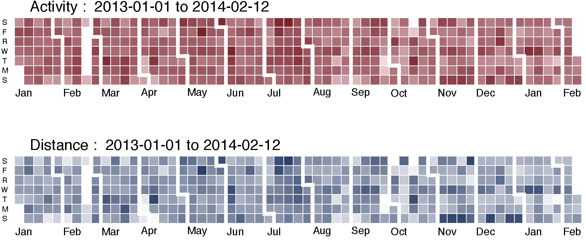
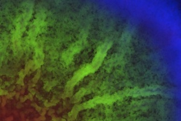
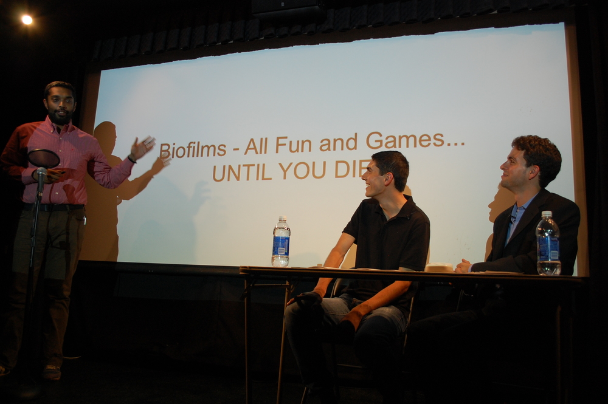

Naveen N. Sinha
Data Analyst at Fitbit
I use data to help others lead more story-worthy lives.
Over the course of my time at the Harvard School of Engineering and Applied Sciences, the Startup Institute, and now Fitbit, I've worked on collaborations between physicists, microbiologists, culinary experts, and fitness enthusiasts.
Swipe of use your keyboard arrows to read more about my previous projects.
Better Living through Fitbit
Prior to my job at Fitbit, I explored various data visualization methods to extract meaning from the step counts, sleep logs, and other statistics from a year of my personal data.
Infographic like Nate Felton's Annual Reports have inspired me to find ways to measure, analyze, and visualize information about my productivity at the office, workouts at the gym, and time spent elsewhere in the world.
You can see a summary of my findings here.
The Social Lives of Bacteria
For my PhD I explored the behavior of bacteria living in communities called biofilms.
Bacteria living in liquid nutrient mixtures often lead boring lives; they swim around, grow, and divide.
At surfaces, however, the same bacteria can exhibit a far more interesting range of behavior, often in response to being deprived of nutrients. Depending on their neighbors and the local environment, they can produce a polymer called matrix, excrete toxins, turn into spores, or exhibit other behavior.
To help understand this process, I made numerous movies of fluorescently-labeled cells and applied various techniques to analyze the images. You can read more in my thesis.
Better Cooking through Science
The culinary world is an endless source of inspiration for my endeavors; my friends in the restaurant industry have taught me much about UX design, project management, and scientific experimentation.
I was the “glue” between chefs, professors, teaching fellows and students at the Science and Cooking course at Harvard. The experience switched me from vegetarianism to a social omnivore and inspired a passion for using cooking as a teaching tool. Read more about the curriculum in the Appendix to my thesis.
Bringing Science Beyond the Lab
One of my reasons for leaving academia was to spread science to a wider audience.
Some examples so far: an article about cocktails for the journal Physics World, I wrote an article about the physics behind mixed drinks, a science curriculum for a summer science program for kids, and experiments with cookies in collaboration with America's Test Kitchen.
I've taught classes at the MIT Museum, Sofra, and Stir. I was also a guest on the You're the Expertpodcast, hosted by my former improv teacher Chris Duffy.